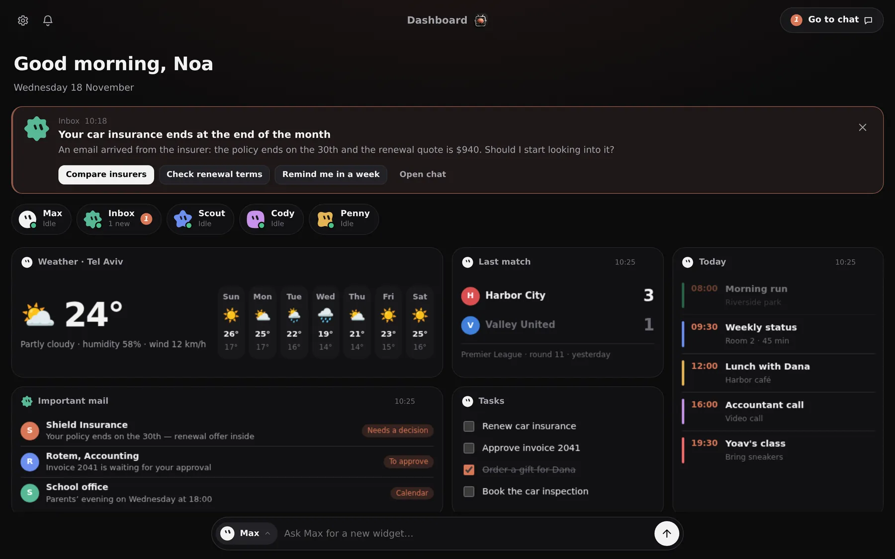
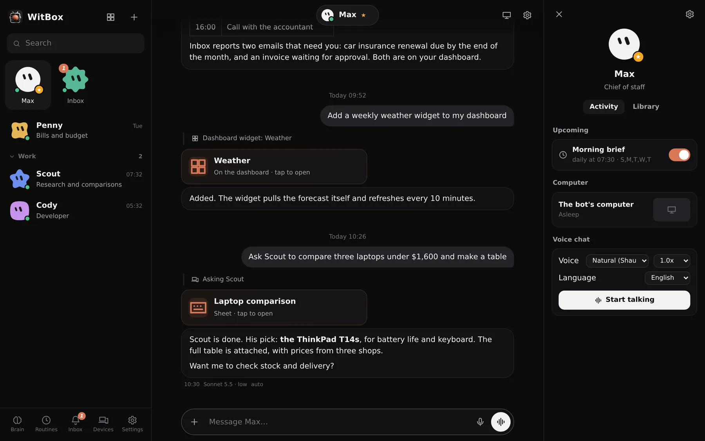
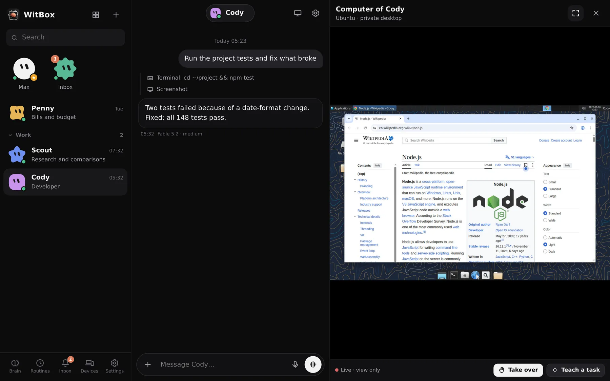
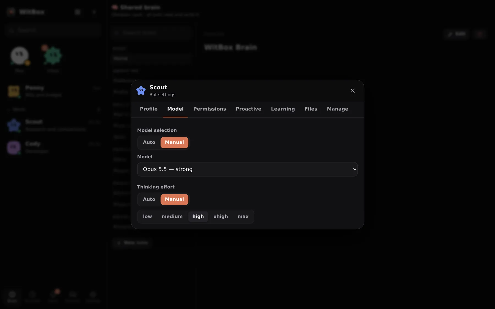
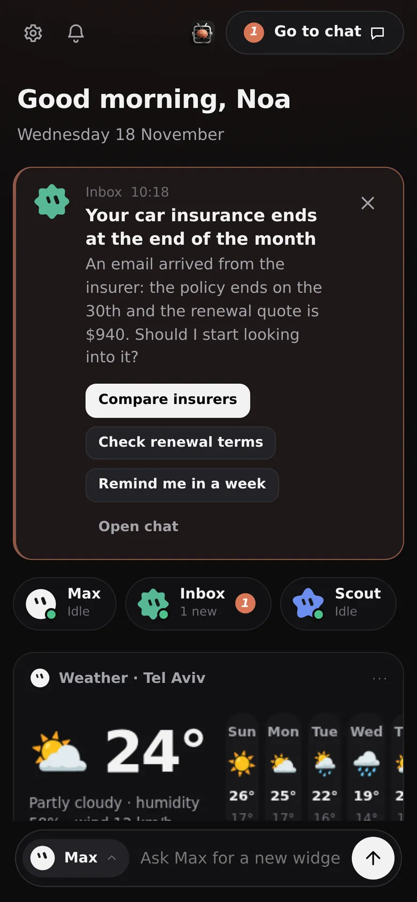
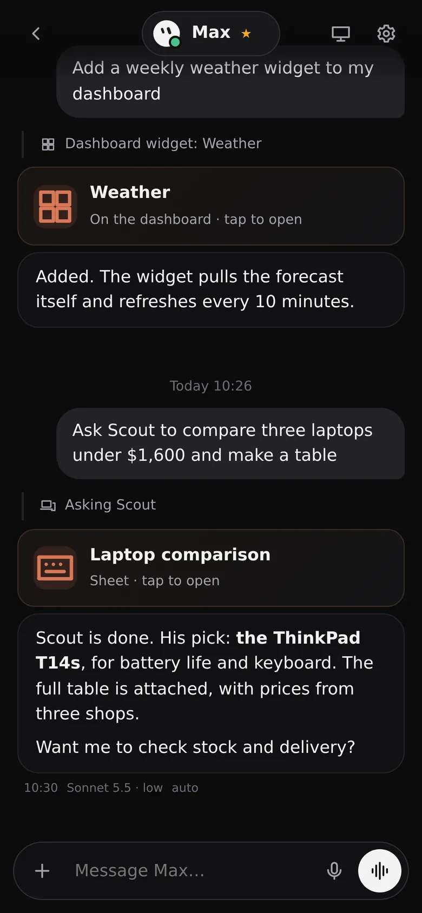
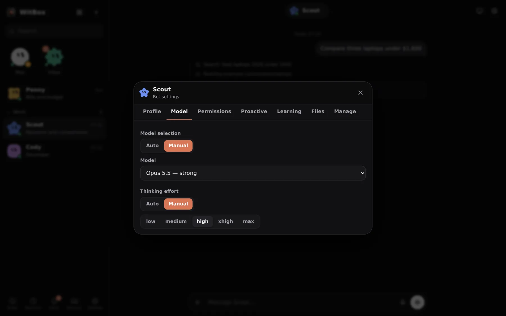
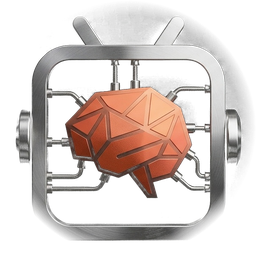

הפשטות שאתם אוהבים.
המוח שחיכיתם לו.Simple on the outside.
Brilliant on the inside.
WitBox מביא את הנוחות של Grok Bot ומלביש אותה על Claude Code: צוות בוטים אישי עם ממשק שיחה קליל, שרץ על המחשב שלכם, לומד אתכם כל הזמן, והמידע נשאר אצלכם.
WitBox takes the effortless feel of Grok Bot and puts it on top of Claude Code: a personal team of bots with a light chat interface, running on your own machine, learning you as it goes — and your data stays with you.

ממשק שכיף לעבוד איתוAn interface you enjoy
שיחה פשוטה, מהירה ונקייה. בוטים עם שם ופרצוף, בלי תפריטים מיותרים ובלי טרמינל.
A simple, fast, clean conversation. Bots with a name and a face, no needless menus and no terminal.
המנוע החזק ביותרThe strongest engine
Claude Code מאחורי כל בוט: הבנת הקשר רחבה, כלים אמיתיים וביצוע של משימות ארוכות מקצה לקצה.
Claude Code behind every bot: deep context, real tools and long tasks carried out end to end.
לא עוד צ׳אט בוט. צוות שלם שעובד בשבילכם.Not another chatbot. A whole team working for you.
מתחילים משימה במחשב בעבודה, עוקבים אחרי ההתקדמות מהנייד בדרך הביתה, והצוות ממשיך לעבוד בלי הפסקה.
Start a task at your desk, follow it from your phone on the way home, and the team keeps working.
צוות בוטים פרואקטיביA proactive team of bots
במקום לחכות שתשאלו, הבוטים יוזמים. בוט ראשי מחלק משימות למומחים, שגרות רצות ברקע, והתראות מגיעות לטלפון רק כשבאמת צריך.
Bots don't wait to be asked. A main bot delegates to specialists, routines run in the background, and your phone buzzes only when it matters.
- בוט ראשי שמנהל את הצוות ומדווח בקצרהA main bot that runs the team and reports briefly
- שגרות: לפי שעה, כל כמה דקות, או כשמגיע מייל חדשRoutines: by time, every few minutes, or on new mail
- המלצות לפעולה בלחיצה אחת, ישר בדשבורדOne-tap suggested actions, right on the dashboard

מחשב אישי לכל בוטA personal computer for every bot
לכל בוט משתמש ושולחן עבודה משלו במחשב לינוקס וירטואלי שרץ אצלכם: דפדפן, אופיס, טרמינל וקבצים. כולם עובדים במקביל, ואתם צופים בשידור חי.
Every bot has its own user and desktop on a virtual Linux computer running on your server: browser, office suite, terminal, files. They all work in parallel while you watch live.
- השתלטות על העכבר והמקלדת להתחברות או CAPTCHATake over mouse and keyboard for a login or a CAPTCHA
- "למד משימה": מדגימים פעם אחת, והבוט שומר סקיל"Teach a task": show it once, the bot saves a skill
- סיסמאות מוקלדות מהכספת; המודל לא רואה אותןPasswords are typed from the vault; the model never sees them

למידה מתמשכת, כמו HermesContinuous learning, Hermes-style
אחרי שיחות, לולאת למידה מתייקת במוח משותף את מה שהתגלה עליכם: העדפות, אנשים, פרויקטים ותיקונים. עבודה שחוזרת על עצמה הופכת לסקיל. המערכת משתפרת מאינטראקציה לאינטראקציה.
After conversations, a learning loop files what it found out about you into a shared Brain: preferences, people, projects, corrections. Repeated work becomes a skill. The system improves with every interaction.
- המוח הוא תיקיית Markdown רגילה, תואמת ObsidianThe Brain is a plain Markdown folder, Obsidian-compatible
- כל הבוטים חולקים את אותו ידעAll bots share the same knowledge
- אפשר לייבא זיכרון מעוזר AI אחרImport your memory from another AI assistant

דשבורד שהבוטים בונים עבורכםA dashboard your bots build for you
מבקשים במילים: "וידג׳ט מזג אוויר", "התוצאה האחרונה של הקבוצה שלי", "המיילים החשובים מהיום". הבוט בונה את הווידג׳ט, שם אותו בדשבורד ושומר אותו מעודכן.
Ask in plain words: "a weather widget", "my team's last result", "today's important mail". The bot builds the widget, puts it on the dashboard and keeps it fresh.
- וידג׳טים הם אפליקציות קטנות וחיותWidgets are small live apps
- כרטיסי המלצה: "הביטוח מסתיים בסוף החודש. להשוות בין חברות?"Suggestion cards: "Your insurance ends this month. Compare insurers?"
- האפליקציה נפתחת ישר על הדשבורדThe app opens straight on the dashboard


המודל הנכון לכל בוטThe right model for every bot
בוחרים בעצמכם איזה מודל ועוצמת חשיבה להצמיד לכל בוט, או נותנים למערכת לבחור אוטומטית לכל משימה את המודל הזול ביותר שמספיק.
Pin a model and thinking effort to each bot yourself, or let WitBox automatically pick the cheapest model that is good enough for each task.
- מהיר וזול למיון מייל, החזק ביותר לקודFast and cheap for mail triage, the strongest for code
- אתם קובעים אילו מודלים מותרים במצב אוטומטיYou decide which models auto mode may use
- אפשר לחבר גם מודל מקומיA local model can be connected too

שרת אחד, כל המכשיריםOne server, every device
אפליקציות ל-Android, ל-Windows ול-Linux, וגם כל דפדפן. הכול מסונכרן בזמן אמת.
Apps for Android, Windows and Linux, plus any browser. Everything in sync, live.
שיחת קולVoice chat
מדברים עם הבוט כמו בטלפון. קול עברי טבעי שרץ מקומית, כאפשרות.
Talk to a bot like on a phone call. A natural local Hebrew voice is optional.
קונקטוריםConnectors
Gmail, יומן, Drive וכל מה שמחובר לחשבון ה-Claude שלכם זמין לבוטים.
Gmail, Calendar, Drive and everything connected to your Claude account.
הרשאות בשליטתכםPermissions you control
לכל קונקטור: ללא גישה, קריאה בלבד או קריאה וכתיבה. כרטיס אישור אחד למשימה, בשפה רגילה: ממי המייל ומה הנושא, בלי מידע טכני.
Per connector: no access, read only, or read and write. One approval card per task, in plain words: who sent the email and its subject, no technical data.
תיקייה משותפת לכל בוטA shared folder per bot
הקבצים שהעליתם, הפרויקטים שהבוט בונה והסשנים שלו מופיעים על שולחן העבודה שלו. קוד נכתב שם ורץ רק במחשב של הבוט.
Your uploads, the projects the bot builds and its sessions appear on its desktop. Code is written there and runs only on the bot's computer.
כספת מוצפנתEncrypted vault
פרטי התחברות נשמרים מוצפנים על השרת שלכם ומוקלדים עבור הבוט.
Logins are stored encrypted on your server and typed for the bot.
שליטה במכשירDevice control
אפשר לתת לבוט להפעיל את הטלפון או המחשב שבידכם, באישור מהמכשיר עצמו.
Let a bot operate the phone or PC in your hands, approved on that device.
כלי הטלפוןPhone tools
באנדרואיד הבוט קורא SMS, שיחות, אנשי קשר, יומן והודעות נכנסות מכל אפליקציה כטקסט, בלי צילומי מסך. כל כלי הוא מתג במכשיר, וקודי אימות מוסתרים.
On Android a bot reads SMS, calls, contacts, the calendar and incoming messages of any app as text, without screenshots. Every tool is a switch on the device, and verification codes are hidden.
הנוחות של ענן. המידע נשאר אצלכם.The comfort of a cloud app. Your data stays home.
בשירותי בוטים בענן, השיחות, הקבצים והחיבורים שלכם נשמרים אצל הספק. ב-WitBox מקבלים את אותו ממשק נוח, אבל הכול נשמר על המחשב שלכם. WitBox נועד להתקנה על גבי רשת Tailscale: השרת לא פותח אף פורט לאינטרנט, ורק מכשירים שמחוברים לרשת הפרטית שלכם, בזהות שלכם, יכולים להגיע אליו.
With cloud bot services, your chats, files and connections live with the vendor. WitBox gives you the same easy interface while everything is stored on your own machine. WitBox is built to be installed on a Tailscale network: the server opens no port to the internet, and only devices on your private network, signed in as you, can reach it.
איפה WitBox עומד מול כלים דומיםHow WitBox compares
הפשטות של Grok Bot, הכוח של Claude Code, הלמידה של Hermes — והמידע אצלכם.
The simplicity of Grok Bot, the power of Claude Code, the learning of Hermes — and your data at home.
| WitBox | Grok Bot | Hermes Agent | OpenClaw | Claude Code לבדוClaude Code alone | |
|---|---|---|---|---|---|
| איפה המידע שלכםWhere your data lives | על המחשב שלכםYour own machine | בענן של הספקThe vendor's cloud | על המחשב שלכםYour machine | על המחשב שלכםYour machine | על המחשב שלכםYour machine |
| ממשקInterface | אפליקציות שיחה ודשבורד: Android, Windows, Linux, דפדפןChat apps + dashboard: Android, Windows, Linux, web | אפליקציות שיחה ודשבורדChat apps + dashboard | טרמינל ואפליקציות מסריםTerminal and messaging apps | אפליקציות מסריםMessaging apps | טרמינל / IDETerminal / IDE |
| מנועEngine | Claude Code, על מנוי ה-Claude שלכםClaude Code, on your Claude subscription | GrokGrok | מודלים רבים (מפתחות API)Many models (API keys) | מודלים רבים (מפתחות API)Many models (API keys) | Claude CodeClaude Code |
| צוות בוטיםA team of bots | כן, עם בוט ראשי שמחלק משימותYes, with a main bot that delegates | כןYes | תת-סוכניםSub-agents | כמה סוכניםMultiple agents | תת-סוכניםSub-agents |
| מחשב לבוטיםA computer for the bots | מכונה פרטית על השרת שלכם; שולחן עבודה ומשתמש לכל בוטPrivate VM on your server; own desktop and user per bot | מחשב ענן אחד לחשבוןOne cloud computer per account | סביבות טרמינלTerminal back-ends | המחשב שלכםYour own machine | המחשב שלכםYour own machine |
| למידה מתמשכתContinuous learning | כן: מוח משותף וסקילים שנכתבים לבדYes: shared Brain + self-written skills | — | כן: לולאת למידה מובניתYes: built-in learning loop | זיכרון מבוסס קבציםFile-based memory | קובצי זיכרון לפרויקטProject memory files |
| שגרות והמלצות יזומותProactive routines and suggestions | כןYes | כןYes | מתזמןScheduler | מתזמןScheduler | — |
| דשבורד וידג׳טים שהבוטים בוניםWidget dashboard built by the bots | כןYes | כןYes | — | — | — |
| מודל לכל בוט / בחירה אוטומטיתModel per bot / automatic routing | שניהםBoth | — | לפי הגדרהPer configuration | לפי הגדרהPer configuration | ידניManual |
| חשיפה לרשתNetwork exposure | אין. רק רשת ה-Tailscale שלכםNone. Your tailnet only | שירות ענן ציבוריPublic cloud service | לפי בחירתכםYou decide | לפי בחירתכםYou decide | מקומיLocal |
| מחירPrice | חינם וקוד פתוח (ומנוי ה-Claude שלכם)Free and open source (+ your Claude plan) | מנויSubscription | חינם (ועלות המודלים)Free (+ model costs) | חינם (ועלות המודלים)Free (+ model costs) | מנוי ClaudeClaude plan |
ההשוואה מבוססת על התיעוד הציבורי של כל מוצר בנובמבר 2026. מוצרים משתנים, ולכן כדאי לבדוק באתרים שלהם. "—" פירושו שהיכולת אינה מוצגת כיכולת מרכזית בתיעוד של המוצר. כל שמות המוצרים הם סימני מסחר של בעליהם, ו-WitBox אינו קשור לאף אחד מהם.
Based on each product's public documentation in November 2026. Products change, so check their sites. "—" means the feature is not presented as a headline capability in that product's documentation. All product names are trademarks of their owners; WitBox is not affiliated with any of them.
שלושה צעדים, ואתם בפניםThree steps and you are in
מריצים את המתקיןRun the installer
קובץ חבילה אחד וסקריפט התקנה. הוא מתקין את כל התלויות על כל הפצת לינוקס נפוצה.
One package file and one install script. It installs every dependency on any common Linux distribution.
מתחבריםSign in
לחשבון ה-Claude שלכם ולרשת ה-Tailscale שלכם. שני קישורים, וזהו.
To your Claude account and to your Tailscale network. Two links, done.
פותחים את האפליקציהOpen the app
בטלפון או במחשב, יוצרים בוט ראשון במילים שלכם, ומתחילים לעבוד.
On your phone or computer, create your first bot in your own words, and get going.
curl -fsSL https://github.com/avitwil/WitBox/releases/latest/download/install.sh -o install.sh && bash install.sh
ממשק נקי וזורם. כוח עיבוד ללא פשרות.A clean, flowing interface. No compromise on power.
חינם, קוד פתוח, ושלכם.
Free, open source, and yours.